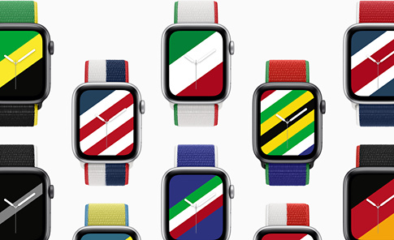

July 2021
WWDC Keynote news
Apple held the WWDC keynote last month. Here is the whole presentation (1 hr + 46 mins long, but chapterized):
Here is everything Apple announced in 9 mins:
Here is Apple's press release summary of the main June 2021 WWDC announcements.
privacy announcements
Apple advances its privacy leadership with iOS 15, iPadOS 15, macOS Monterey, and watchOS 8, as summarized in Apple's press release, introducing new features to control and monitor app user data, including:
1). Mail privacy protection (helping avoid the invisible pixels trick) and hiding a user's IP address.
2). A new App Privacy Report, to see how often each app has used the permission a user previously granted to access their location, photos, camera, microphone, and contacts during the past seven days.
3). Siri now processes audio requests on the device, by default. This avoids recording a user's audio, the biggest privacy concern about any digital assistant. Furthermore, many requests do not even require internet access.
4). Introducing iCloud+ which is iCloud plus new premium features, including iCloud Private Relay, Hide My Email, and expanded HomeKit Secure Video support, `at no additional cost'.
5). Introducing Private Relay. This is a new internet privacy service built into iCloud, `allowing users to connect to and browse the web in a more secure and private way. When browsing with Safari, Private Relay ensures all traffic leaving a user’s device is encrypted, so no one between the user and the website they are visiting can access and read it, not even Apple or the user’s network provider.' Apple's implementation ensures `no single entity can identify both who a user is and which sites they visit.' In many ways, it's better than a VPN. But it only applies to Safari (not other web browsers).
6). Introducing Hide My Email. This lets users `share unique, random email addresses that forward to their personal inbox anytime they wish to keep their personal email address private.'
7). Expanded HomeKit Secure Video, so users can connect more video cameras, with end-to-end encrypted storage for home security video footage that will not count against a user's storage capacity. Additionally, `HomeKit Secure Video also ensures that activity detected by users’ security cameras is analyzed and encrypted by their Apple devices at home before being securely stored in iCloud.' [ This is the opposite of what Ring Amazon cameras do.]
There is a lot of confusion about the new iCloud+ but it's actually very simple: iCloud paid plans are now getting renamed as iCloud+ AND they are getting extra privacy features but zero price increase. That's it. iCloud+ plans: 50GB with one HomeKit Secure Video camera ($0.99 per month), 200GB with up to five HomeKit Secure Video cameras ($2.99 per month), and 2TB with an unlimited number of HomeKit Secure Video cameras ($9.99 per month). These plans are the same as today's iCloud plans (in capacity and price), but without the new features listed above. Recall the current iCloud Plans offer entry-level iCloud as a free service at 5GB of storage. The entry-level & free iCloud service will not include the new features.
macOS Monterey
Apple has Announced macOS Monterey With Shortcuts App, updated Safari browsing, 'Focus' Do Not Disturb features, and more.
Newer Macs Can Use Another Mac as an External Display on macOS Monterey. This is a big deal, and many Mac users have been asking for it.
Several macOS Monterey Features Not available on Intel-Based Macs, points out Macrumors. The reason:
It’s because Intel Macs don’t have the neural engine these features require. M1 is an A14X+. T2 is an A10 (pre-ANE). T1 was an S2 (watch SiP). Previous Intel Macs had nothing. These features all lean on the neural engine. https://t.co/jxqB7LsR2Q
— Rene Ritchie (@reneritchie) June 9, 2021
other Apple news
Apple was granted a new patents for `car suspension system'...
Apple released new cases with summer colors: Sunflower, Cloud Blue and Electric Orange iPhone 12.
iPhone was recovered after 3 days underwater, with its alarm buzzing, and is still working. In idaho, `Tom, who went to the river with his wife and friends, tipped his kayak near the Tilden Bridge Boat Ramp and lost his new phone, keys, fishing pole, and wallet in the swiftly moving current. Although Tom was wearing a lifejacket and managed to swim out of the river unharmed, he was discouraged by all the lost property.' Later on, a rescue team was able to fish out the iPhone from the river. `
iOS apps
Do you sometimes want to read an article online but also prefer instead to listen to it while exercising or cooking, or doing some other activity? Except that in most cases, there is no such audio to listen to. Enter Audiblogs. This is a web-based service that lets you provide the URL link to the article of interest. Within a minute, a high quality audio becomes available, being read by a male voice that sounds natural. You can listen on the web browser on any device. You can add all these audio readings in your own playlist. But it gets even better! On iOS, Audiblogs gives you a unique URL that you can feed into your podcast app of choice and this lets you listen to your Audiblog playlist in your favorite podcast app. Olga tested this with Overcast and it works well.
Additionally, Audiblog shows you the most popular articles of the past several days and you can easily listen to those as well.
Apple announced The 2021 Apple Design Award Finalists.
Among others, the finalists include:
1Password, which is probably the best password manager and more.
Be My Eyes, an app that helps the blind or visually impaired. The app is free and anyone can use it to volunteer to help or to get help.
Poolside FM, music player that plays summer music, `transporting you to a virtual vacation where the sun never sets.'
Universe is an iOS app for creating super easy websites in minutes.
Blind Drive is a `black comedy action game'. In this game, you are blindfolded and drive onto on-coming traffic.` Take a look:
Dark Sky has been updated, per Macrumors. They also note that Apple's iOS 15 preview, shows that the native weather app has more features that look like Dark Sky. Apple acquired Dar Sky in 2020, so it's possible these could merge into a single app, eventually.
podcasts
Walt Mossberg announced:
FYI, all 6 of Steve Jobs’s appearances at the @allthingsd conferences - including the joint session with Bill Gates - are available for free in both pristine video and audio on @ApplePodcasts. We donated them after his death as a memorial. https://t.co/nrtYTC4hP5
— Walt Mossberg (@waltmossberg) January 12, 2021
Here is the collection: Steve Jobs at the D: All Things Digital Conference (Video): from 2003 to 2010 plus a retrospective from 2012.
gadgets & accessories
Nanoleaf Shapes are modular LED flat lights you can place on any wall. You can create your own patterns for a mosaic of your design.
Roger points us to a recent video by Shane Whitley, a review of Nanoleaf Shapes with THREAD:
Lee told us about Hercules Tuff Charging Station for Multiple Devices.
Lee also told us about SwitchBot Smart Switch Button Pusher. Lee reported using this to control his light switch that turns his house's outside front lights on/off. He wanted to be able to turn those on with a timer, especially when traveling. This requires an app for control and Bluetooth connectivity. However, to enable true remote control via such as with IFTTT, or Alexa (or other, such as Google), you will also need a hub:
SwitchBot Hub Mini Smart Remote.
watch
Apple has released 22 new US and International Collection Sport Loop watch bands. They are colorful designs representing nations across the globe, each with a downloadable matching watch face.
Apple wants to replace your wallet and keys with the Apple Watch, writes Yahoo News. `As part of the watchOS 8 software update, available as a public beta in the coming weeks, the Apple Watch will be able to present digital ID cards, which will eventually include licenses, and lock and unlock everything from your front door to your car.'
Apple Fitness+ has just released new episodes of Time to Walk. Put on your Watch, go for a walk, and listen to inspiring audio while walking. These are audio workouts for Apple watch. The new episodes are `designed to encourage Fitness+ users to get active by walking more often'. Additionally, Fitness+ has introduced a new Artist Spotlight series with workouts featuring entire playlists by music artists including Alicia Keys, Jennifer Lopez, Keith Urban, and Lady Gaga, as well as workouts with one of the most sought-after fitness experts, Jeanette Jenkins, all designed to keep users motivated and moving as they continue on their fitness journey
The next step for wearables could be illness ‘warning lights’, reports The Verge. `research showed that Apple Watches could detect changes in the heart rate variability of healthcare workers up to seven days before they were diagnosed with COVID-19'. Wearables like Apple watch are not in a position to diagnose. However, “It’s just like the warning light for your car — take it into the mechanic, we don’t know what’s wrong, but something looks off,” Rai says. “I think that’s where the industry is heading.”
privacy & security
Facebook pays for study that says Apple's iOS 14 privacy changes are bad, reports iMore.
Here is a case where personal data can help solve a crime: Smartwatch and phone data led husband to confess to murdering his wife.
Apple is introducing Private Relay:
With iOS 15, and those who use iCloud+, Safari users will have Private Relay. This feature will ensure your Safari browsing data is encrypted first before leaving your device. Then your data will be sent through 2 relays (servers). The first server will only see an IP address but not what you are aiming to connect to. The 2nd relay will see what you want to connect to but not the IP address. This setup will make it practically impossible for websites and 3rd party aggregators to create profiles on you, including your ISP and many other data brokers.
Here is an explanatory video from Apple on iCloud+ Private Relay, watch the first 5 minutes.
Here is About Apple iCloud Private Relay and how it's different from a VPN.
Here is Digging into Apple’s iCloud Private Relay: how it works and what it does.
Here is a great video from Rene Ritchie that describes the problem we have now with lack of privacy and how Private Relay is going to help, how it's different from a VPN, and more:
next iPUG meeting
Our next iPUG meeting will be on Tuesday, August 2, at 7 pm.